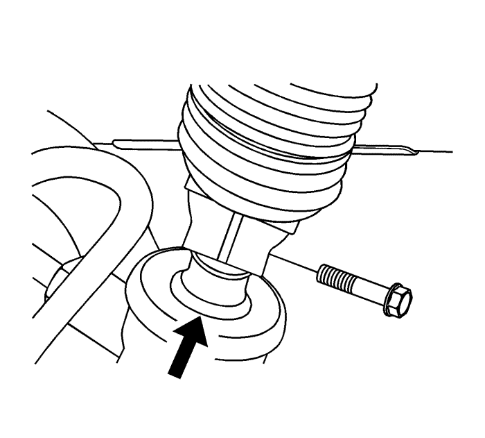

Sustitución del mecanismo de la dirección
Procedimiento de desmontaje
Precaución: Con las ruedas del vehículo completamente rectas, asegure el volante empleando el pasador antigiro de la columna de dirección, bloqueo de la columna o una cinta para evitar la rotación. El bloqueo de la columna de dirección evitará daños y un posible mal funcionamiento del sistema SIR. El volante debe asegurarse en posición antes de desconectar los siguientes componentes: | • | La columna de dirección |
| • | El husillo(s) intermedio |
| • | El mecanismo de la dirección |
Nota: Se muestra la configuración del modelo con el volante a la izquierda. El modelo con el volante a la derecha presenta una configuración similar.
- Con las ruedas delanteras en la posición de marcha en línea recta, sitúe el interruptor de encendido en la posición de desconexión y extraiga la llave del cilindro de la cerradura de encendido.
- Gire el volante para bloquear la columna de dirección.
- Elevar el vehículo y soportarlo de manera segura. Consultar Elevación del vehículo con un gato .
- Desmontar las ruedas delanteras del vehículo. Consultar Desmontaje y montaje de la rueda y el neumático .
- Desmonte el conjunto de la fijación trasera del transeje. Consultar Sustitución del alojamiento trasero de la transmisión : Tracción a las 4 ruedas → FWD (tracción delantera) .
- Coloque recipientes colectores debajo del vehículo para recoger el líquido de la dirección asistida.
Precaución: Consulte Atención: tubo flexible de la dirección asistida desconectado en la sección Prólogo
- Desconecte el tubo de presión (1).
- Desconecte el tubo de salida (2) del mecanismo de la dirección.
- Desconecte los conectores eléctricos si es necesario.

- Solicite a un ayudante que desbloquee, gire y sujete el volante para poder acceder al tornillo de sujeción del husillo intermedio.
- Haga una marca en el alojamiento de la mangueta que quede alineada con otra marca en el acoplamiento inferior del eje intermedio.
- Desmonte el tornillo de sujeción del eje intermedio.
- Solicite a un ayudante que bloquee la columna de dirección en la posición de marcha en línea recta.

- Desmonte las tuercas de la barra de acoplamiento exterior.
- Desconecte las barras de acoplamiento exteriores de las manguetas de dirección.
- Desmonte el tornillo de fijación izquierdo del mecanismo de la dirección.
- Desmonte el tornillo de fijación derecho del mecanismo de la dirección.
- Desmonte el mecanismo de la dirección del vehículo a través de la zona de la carcasa del volante.
Procedimiento de montaje
- Posicione el mecanismo de la dirección en el vehículo a través de la zona de la carcasa del volante.
Nota: Compruebe que la columna de dirección y el mecanismo de la dirección se encuentran en la posición de marcha en línea recta. Monte el mecanismo de la dirección desde debajo del vehículo.
- Alinee las marcas de los ejes para garantizar una colocación correcta.
- Asiente la mangueta en el eje intermedio.
Precaución: Consulte Precaución con las fijaciones en la sección Prólogo
- Acople el tornillo del soporte de fijación derecho al mecanismo de la dirección y apriételo a un par de 110 N·m (81 lb. pie).
- Acople el tornillo del soporte de fijación izquierdo al mecanismo de la dirección y apriételo a un par de 110 N·m (81 lb. pie).
- Conecte las barras de acoplamiento exteriores a las manguetas.
- Monte las tuercas en las barras de acoplamiento exteriores y apriételas a un par de 50 N·m (37 lb. pie).
- Solicite a un ayudante que desbloquee, gire y sujete el volante para poder acceder al tornillo de sujeción del husillo intermedio.
- Monte el tornillo de sujeción del husillo intermedio inferior y apriételo a un par de 34 N·m (25 lb. pie).
- Compruebe que la columna de dirección y el mecanismo de la dirección se encuentran en la posición de marcha en línea recta.
Precaución: Consulte Atención: los tubos flexibles que monte no deben presentar torsiones ni dobleces en la sección Prólogo
- Conecte el tubo de presión y apriete el racor (1) a un par de 28 N·m (21 lb. pie).
- Conecte el tubo de salida del mecanismo de la dirección y apriete el racor (2) a un par de 28 N·m (21 lb. pie).
- Emborne los conectores eléctricos, si es necesario.
- Monte el conjunto de la fijación trasera del transeje. Consultar Sustitución del alojamiento trasero de la transmisión : Tracción a las 4 ruedas → FWD (tracción delantera) .
- Monte los conjuntos de neumático y llanta delanteros. Consultar Desmontaje y montaje de la rueda y el neumático .
- Bajar el vehículo.
Precaución: Consulte Precaución sobre el uso de aceite de dirección asistida adecuado en la sección Prólogo
- Añada líquido al sistema de la dirección asistida. Consultar Comprobación y adición de dirección de la dirección asistida .
Precaución: Consulte Atención: aire en el sistema de dirección asistida en la sección Prólogo
- Purgue el sistema de dirección asistida. Consultar Purga de aire del sistema de dirección asistida .
- Limpiar cualquier exceso de líquido de la dirección asistida que pudiera existir en el vehículo.
- Quite los recipientes colectores.
- Revise la posición del sistema de dirección. Consultar Comprobación de la marcha en línea recta .
| © Copyright Chevrolet Europe. All rights reserved |